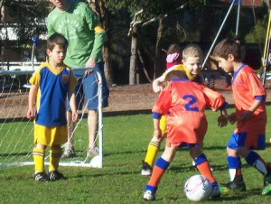
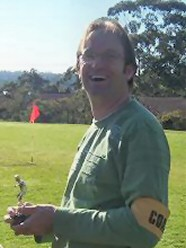
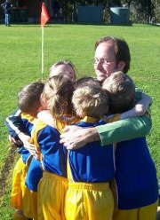
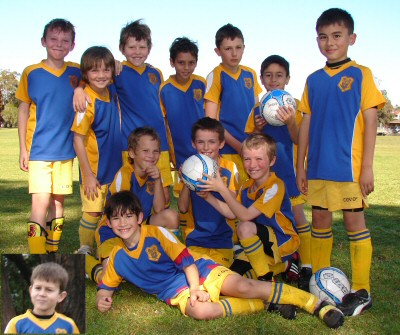
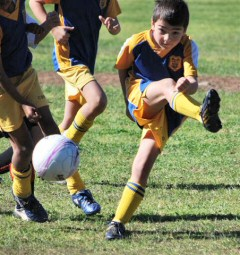
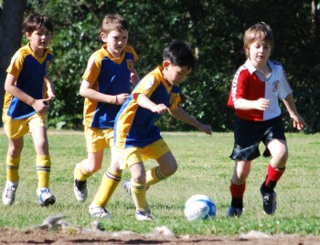
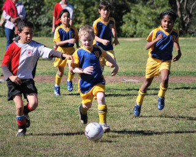

| Match Report - 15 August 2009 |
|
|
|
|
|
|
|
| U6 Purple |
North Ryde 0 - All Saints H/Hill B 7

|
|
|
|

There was excitement and tension in the air... Coach Marc was anxious and racing
around the field. Coach could be heard yelling out "Last game of the season, we
gonna give it our all!".

It was a brilliant game of oohs and ahhs as we watched our mighty little purples
play their final match. Lucas was absolutely on fire
today, the standout of the day. If there was action, Lucas was there.


Jasmine was great, pre-empting Coach's instructions,
always getting into the right position. Jayden was
brilliant at kick offs and goal defending. Cameron was
good at sideline and corner kick-ins. Lukah did a fabulous
high kick, straight over the heads of the other team, heading in goal direction.
We missed Will who was on holiday today.
This was definitely the most exciting gameplay we've seen all season. Well done to
all of the team. To show their appreciation, the team presented Coach Marc with the
Player of the Week Trophy.
Thank you Marc from the team and the parents, for all of your hard work. Thank you
to all of the parents who assisted Marc, ran the training, yelled encouragement from
the sideline and provided the after game lollies. Together we have made this season
a fun and enjoyable experience.
The team group hug at the end says it all... Under 6 Purples are the best! Hip Hip
Hooray!

- Sally Last (Supermum)
|
|
|
|
|
|

Our warriors were pumped up and ready to play soccer today. We missed our coach
Pauline due to her knee operation... we hope you get well soon... and thank you
to David for being our stand-in coach today.
The U9 Div 1's were up against the number one team in the competition and we needed
to win to go to the grand final. They put up a great fight as soon as the whistle
blew. Shannon and Adam teamed up to strike as soon as the opportunity arose but the
Normanhurst Eagles defence was strong and fearless. Eli, David and Tom M worked hard
to support the team in the middle. Their soccer skills were superb. Our defenders Jet,
Jack and Tom H were fearless as they stopped the progress of our opposition every
time they came into their territory. Patrick and Anthony were also prominent throughout
the game and put up a great fight. Harrison was excellent in goal with his mission to
stop every ball that came to him and with his strong kicks, gave us a lot of opportunity
in open space. Once again, the Eagles pulled out all their tricks to stop us.
Finally, the first goal came when Adam received the ball in front of the goal and using
his magic put the ball into the back of the net. It was beautiful to watch. We seemed
to be gaining an advantage over our rivals but we were still cautious at only 1 - 0.

The second half began with our mission to put this game further out of reach of the
Eagles. Our spirit was well and truly on display when after being injured on more than
one occasion, Shannon returned to his position and continued the battle. The Eagles
started strongly against our warriors but we continued to strike and defend against
them with the same purpose we had shown in the first half. Finally, the struggle
between both teams was broken when Normanhurst Eagles scored. The ball seemed to hit
the left, top and right goal posts but was still deemed to have crossed the line and
the goal was awarded to take the score to 1 - 1. Our boys never gave up and bravely
did their best to strike back but the scores remained locked at 1 - 1 until the final
whistle.
Our boys can hold their heads up high for a courageous performance today.
- The Glover Family
|
|
|
|
|
|

A great day for the last game of the season. A game at Boronia, close to home and
late in the morning. What more could we ask for! The kids were up for it and the
parents were up for it as well!

It was a fairly evenly contested game with North Ryde looking to pass to their team
mates on a regular basis and the Dragons defence closing our attacks down. Peter was
strong in goals for the first half and was confronted late in the half by a tearaway
Dragon closing in on his goal. He effortlessly stopped the shot on goal and continued
to dispatch another good kick to his NR buddies. He continued his good efforts on the
field in the second half with a tireless display. Andrhea continued to tackle well
and is now starting to get a better feel for the ball with her dribbling and passing.
Thomas was his usual, tackling well, recovering well when needed and generally
difficult to get past in defence. Tommy, Satya, Liam and Ryan worked hard all game
and gave the opposition plenty to think about.

In the middle Hamish continued his steaming runs at the Dragons and Matthew was as
solid as ever and in the second half in goals, turning defence quickly into attack.
Anaya has been willing and able in trying to learn the nuances of the game having
started half way through the season and Sam was always there today ready to grab any
loose balls and attack.
We started push forward in the second half and attempt to take control of the game,
succeeding in forcing a number of corners but not able to get many clear shots on
goal. Oscar and Rhea have managed to find a good combination up front and were
troubling the Dragons regularly with their incisive running and passing. Half way
through the second half Oscar got a loose ball in the penalty area and managed to
slot it around a handful of players into the corner with their keeper having no
chance. This was enough to decide the game and cap off an enjoyable season for all.
Thanks to Scott for always being at training even when he was sick and managing the
subs (no easy task) and to Mandy for co-ordinating activities so that everything ran
smoothly.
- Allan Ball (Asst Coach)
|